Evolution of Madagascar’s plant biodiversity under climate change
Source:vignettes/Madagascar.Rmd
Madagascar.RmdWe want to identify biodiversity refuge zones in Madagascar
1 Load librairies
#> Loading required package: sp
#> ##
#> ## jSDM R package
#> ## For joint species distribution models
#> ## https://ecology.ghislainv.fr/jSDM
#> ##2 Datasets
2.1 Forest inventory
National forest inventories carried out on \(753\) sites on the island of Madagascar are available, listing the presence or absence of \(555\) plant species on each of these sites between 1994 and 1996. We use these forest inventories to calculate a matrix indicating the presence by a \(1\) and the absence by a \(0\) of the species at each site by removing observations for which the species is not identified. This matrix therefore records the occurrences of \(483\) species at \(751\) sites.
# forest inventory
trees <- read.csv("~/Documents/projet_BioSceneMada/forest_inventory_Madagascar.csv")
trees <- trees[-which(is.na(trees$sp)),]
trees$plot <- as.character(trees$plot)
plots <- unique(trees$plot)
nplot <- length(plots)
sp <- unique(trees$taxize)
nsp <- length(sp)
# presence/absence of each species on each plot
nplot <- length(unique(trees$plot))
species <- unique(trees$taxize)
nsp <- length(species)
# presence/absence of each species on each plot
PA <- matrix(0,nplot,nsp)
rownames(PA) <- paste(sort(as.numeric(unique(trees$plot))))
colnames(PA) <- species
for (i in 1:nplot){
for (j in 1:nsp){
idx <- which(trees$taxize == species[j])
PA[paste(trees$plot[idx]),j] <- 1
}
}
# save presence/absence at inventory sites matrix
save(PA, file="~/Documents/projet_BioSceneMada/Report/data/PA.RData")2.2 Current environmental variables
Among the climatic and environmental data available on the site concerning the whole island of Madagascar at present (interpolations of representative observed data from the years 1950-2000). We choose to use the following variables because they have an ecological meaning which makes them easily interpretable and are little correlated between them according to the article Vieilledent et al. (2013) : the average annual precipitation (mm) - temp: the average annual temperature (\(^\circ C\times 10\)). - prec: the average annual precipitation (mm). - sais_temp: the seasonality of temperatures corresponds to the standard deviation of monthly temperatures multiplied by \(100\). - sais_prec: the seasonality of precipitation as a coefficient of variation. - cwd: the annual climatic water deficit (mm) is based on monthly precipitation (\(prec\)) and potential evapotranspiration (\(pet\)) which is defined as the amount of evaporation that would occur in a month if a sufficient water source were available: \(\mathrm{cwd}= \sum_{m=1}^{12}\min(0, \ \mathrm{prec}_m-\ \mathrm{pet}_m)\).
We consider also the quadratic effects of these climate variables to perform a quadratic regression, which is more suitable for fitting a niche model than a linear regression.
# climatic variables
s <- stack("~/Documents/projet_BioSceneMada/Report/data/current.tif")
names(s) <- c(paste("tmin",1:12,sep=""),paste("tmax",1:12,sep=""),
paste("prec",1:12,sep=""),paste("bio",1:19,sep=""),
paste("pet",1:12,sep=""),"pet","cwd","ndm")
# get intersting covariables
clim_var <- dropLayer(s, c(1:36,38,39,41:47,49,50,52:68,70))
names(clim_var) <- c("temp","prec","sais_temp","sais_prec","cwd")
# representation
par(oma=c(0,0,2,1))
plot(clim_var)
title("Current bioclimatic variables", outer=TRUE, cex=0.8)
# spatial points of each plot
coords <- unique(cbind(trees$long,trees$lat, as.numeric(trees$plot)))
coords <- coords[sort(coords[,3], index.return=TRUE)$ix,]
longlat <- SpatialPoints(coords[,1:2])
proj4string(longlat) <- CRS("+proj=longlat +ellps=clrk66")
# latlong to UTM38S projection
xy <- spTransform(longlat, CRS("+proj=utm +zone=38 +south +datum=WGS84 +units=m +no_defs +ellps=WGS84 +towgs84=0,0,0"))
# extract climatic data on each plot
clim <- raster::extract(clim_var,xy)
clim2 <- clim^2
colnames(clim2)<-paste(colnames(clim),rep("2",ncol(clim)),sep="")
pos <- coords
colnames(pos) <- c("long","lat","site")
# Add squared data
data_clim2 <- data.frame(cbind(clim,clim2,pos))
nparam <- ncol(data_clim2) -3
library(tidyverse)
# reduced centered data
scaled_data_clim2 <- scale(data_clim2[,1:nparam])
means <- attr(scaled_data_clim2,"scaled:center")
sds <- attr(scaled_data_clim2,"scaled:scale")
scaled_data_clim2 <- as_tibble(cbind(site=data_clim2$site,scaled_data_clim2,lat=data_clim2$lat,long=data_clim2$long))
## Design matrix
X <- data.frame(intercept=rep(1,nplot),dplyr::select(scaled_data_clim2,-lat,-long, -site))
np <- ncol(X)
write.csv(X, file = "~/Documents/projet_BioSceneMada/Report/data/X.csv",row.names = F)
# save climatic data at inventory sites
save(scaled_data_clim2, means, sds, xy,
file="~/Documents/projet_BioSceneMada/Report/data/scaled_data_clim.RData")
# save raster in .tif format
# Add squared data
clim_var <- stack(clim_var,clim_var^2)
# Center and reduce climatic variables
# using means and standard deviations of climatic variables at inventory sites
scaled_clim_var <- (clim_var-means)/sds
writeRaster(scaled_clim_var,"~/Documents/projet_BioSceneMada/Report/data/scaled_clim.tif",
format="GTiff", options=c("COMPRESS=LZW", "PREDICTOR=2"), overwrite=TRUE)
The values of these climate variables corresponding to the coordinates of the inventory plots are extracted and scaled to obtain the following dataset where coordinates of the sites will then be used for spatial interpolation and to spatially represent the results.
2.3 Future environmental variables
Future climate data have been obtained from the CGIAR CCAFS climate data portal and are available at . Future conditions are downscaled global climate model (GCM) data from CMIP5 (IPPC Fifth Assessment), at 30 arc-seconds (~1km) resolution. We consider future conditions for the time period of 2080s, with the CO2 emission scenarios RCP 8.5, characterized by increasing greenhouse gas emissions over time representative for scenarios in the literature leading to high greenhouse gas concentration levels. The underlying scenario drivers and resulting development path are based on the A2r scenario detailed in (Riahi, Grubler & Nakicenovic 2007). We will then consider the mean of the presence probabilities predicted from future climate data obtained with three GCMs (GISS-E2-R, HadGEM2-ES and NorESM1-M).
load("~/Documents/projet_BioSceneMada/Report/data/scaled_data_clim.RData")
# future climatic variables with GCM GISS-E2-R climatic variables
s_gs <- stack("~/Documents/projet_BioSceneMada/Report/data/gs_85_2080.tif")
names(s_gs) <- c(paste("tmin",1:12,sep=""),paste("tmax",1:12,sep=""),
paste("prec",1:12,sep=""),paste("bio",1:19,sep=""),
paste("pet",1:12,sep=""),"pet","cwd","ndm")
# get intersting covariables
clim_var_gs <- dropLayer(s_gs, c(1:36,38,39,41:47,49,50,52:68,70))
names(clim_var_gs) <- c("temp","prec","sais_temp","sais_prec","cwd")
# representation
par(oma=c(0,0,2,1))
plot(clim_var_gs)
title("Future bioclimatic variables under GISS-E2-R GCM", outer=TRUE, cex=0.8)
# Add squared data
clim_var_gs <- stack(clim_var_gs,clim_var_gs^2)
# Center and reduce climatic variables
# using means and standard deviations of climatic variables at inventory sites
scaled_clim_var_gs <- (clim_var_gs-means)/sds
# save raster in .tif format
writeRaster(scaled_clim_var_gs,"~/Documents/projet_BioSceneMada/Report/data/scaled_clim_gs.tif",
format="GTiff", options=c("COMPRESS=LZW", "PREDICTOR=2"), overwrite=TRUE)
# future climatic variables with GCM HadGEM2-ES
s_he <- stack("~/Documents/projet_BioSceneMada/Report/data/he_85_2080.tif")
names(s_he) <- c(paste("tmin",1:12,sep=""),paste("tmax",1:12,sep=""),
paste("prec",1:12,sep=""),paste("bio",1:19,sep=""),
paste("pet",1:12,sep=""),"pet","cwd","ndm")
# get intersting covariables
clim_var_he <- dropLayer(s_he, c(1:36,38,39,41:47,49,50,52:68,70))
names(clim_var_he) <- c("temp","prec","sais_temp","sais_prec","cwd")
# representation
par(oma=c(0,0,2,1))
plot(clim_var_he)
title("Future bioclimatic variables under HadGEM2-ES GCM", outer=TRUE, cex=0.8)
# Add squared data
clim_var_he <- stack(clim_var_he,clim_var_he^2)
# Center and reduce climatic variables
# using means and standard deviations of climatic variables at inventory sites
scaled_clim_var_he <- (clim_var_he-means)/sds
# save raster in the .tif format
writeRaster(scaled_clim_var_he,"~/Documents/projet_BioSceneMada/Report/data/scaled_clim_he.tif",
format="GTiff", options=c("COMPRESS=LZW", "PREDICTOR=2"), overwrite=TRUE)
# future climatic variables with GCM NorESM1-M
s_no <- stack("~/Documents/projet_BioSceneMada/Report/data/no_85_2080.tif")
names(s_no) <- c(paste("tmin",1:12,sep=""),paste("tmax",1:12,sep=""),
paste("prec",1:12,sep=""),paste("bio",1:19,sep=""),
paste("pet",1:12,sep=""),"pet","cwd","ndm")
# get intersting covariables
clim_var_no <- dropLayer(s_no, c(1:36,38,39,41:47,49,50,52:68,70))
names(clim_var_no) <- c("temp","prec","sais_temp","sais_prec","cwd")
# representation
par(oma=c(0,0,2,1))
plot(clim_var_no)
title("Future bioclimatic variables under NorESM1-M GCM", outer=TRUE, cex=0.8)
# Add squared data
clim_var_no <- stack(clim_var_no,clim_var_no^2)
# Center and reduce climatic variables
# using means and standard deviations of climatic variables at inventory sites
scaled_clim_var_no <- (clim_var_no-means)/sds
# save raster in .tif format
writeRaster(scaled_clim_var_no,"~/Documents/projet_BioSceneMada/Report/data/scaled_clim_no.tif",
format="GTiff", options=c("COMPRESS=LZW", "PREDICTOR=2"), overwrite=TRUE)


3 Fitting joint species distribution model (JSDM)
3.1 Model definition
Referring to the models used in the articles Warton et al. (2015) and Albert & Siddhartha (1993), we define the following latent variable model (LVM) to account for species co-occurrence on all sites :
\[ \mathrm{probit}(\theta_{ij}) =\alpha_i + \beta_{0j}+X_i.\beta_j+ W_i.\lambda_j \]
Link function probit: \(\mathrm{probit}: q \rightarrow \Phi^{-1}(q)\) where \(\Phi\) correspond to the repartition function of the reduced centred normal distribution.
Response variable: \(Y=(y_{ij})^{i=1,\ldots,nsite}_{j=1,\ldots,nsp}\) with:
\[y_{ij}=\begin{cases} 0 & \text{ if species $j$ is absent on the site $i$}\\ 1 & \text{ if species $j$ is present on the site $i$}. \end{cases}\]
- Latent variable \(z_{ij} = \alpha_i + \beta_{0j} + X_i.\beta_j + W_i.\lambda_j + \epsilon_{i,j}\), with \(\forall (i,j) \ \epsilon_{ij} \sim \mathcal{N}(0,1)\) and such that:
\[y_{ij}=\begin{cases} 1 & \text{if} \ z_{ij} > 0 \\ 0 & \text{otherwise.} \end{cases}\]
It can be easily shown that: \(y_{ij} \sim \mathcal{B}ernoulli(\theta_{ij})\).
Latent variables: \(W_i=(W_i^1,\ldots,W_i^q)\) where \(q\) is the number of latent variables considered, which has to be fixed by the user (by default \(q=2\)). We assume that \(W_i \sim \mathcal{N}(0,I_q)\) and we define the associated coefficients \(\lambda_j=(\lambda_j^1,\ldots, \lambda_j^q)'\), also known as “factor loadings” (Warton et al. 2015). We use a prior distribution \(\mathcal{N}(0,10)\) for all lambdas not concerned by constraints to \(0\) on upper diagonal and to strictly positive values on diagonal.
Explanatory variables: bioclimatic data about each site. \(X=(X_i)_{i=1,\ldots,nsite}\) with \(X_i=(x_i^1,\ldots,x_i^p)\in \mathbb{R}^p\) where \(p\) is the number of bioclimatic variables considered. The corresponding regression coefficients for each species \(j\) are noted : \(\beta_j=(\beta_j^1,\ldots,\beta_j^p)'\).
\(\beta_{0j}\) correspond to the intercept for species \(j\) which is assumed to be a fixed effect. We use a prior distribution \(\mathcal{N}(0,10)\) for all betas.
\(\alpha_i\) represents the random effect of site \(i\) such as \(\alpha_i \sim \mathcal{N}(0,V_{\alpha})\) and we assume that \(V_{\alpha} \sim \mathcal {IG}(\text{shape}=0.5, \text{rate}=0.005)\) as prior distribution by default.
This model is equivalent to a multivariate GLMM \(\mathrm{g}(\theta_{ij}) = \alpha_i + X_i.\beta_j + u_{ij}\), where \(u_{ij} \sim \mathcal{N}(0, \Sigma)\) with the constraint that the variance-covariance matrix \(\Sigma = \Lambda \Lambda^{\prime}\), where \(\Lambda\) is the full matrix of factor loadings, with the \(\lambda_j\) as its columns.
b
## Parameters inference
We fit a binomial joint species distribution model, including two latent variables and random site effect using the jSDM_binomial_probit() function to perform binomial probit regression considering all the species from the data described above, by performing \(100 000\) iterations including \(40 000\) of burn-in and we retain \(N_{samp}=1 000\) values for each parameter of the model.
We use species’s prevalences as starting values for species intercept \(\beta_0\).
load("~/Documents/projet_BioSceneMada/Report/data/scaled_data_clim.RData")
load("~/Documents/projet_BioSceneMada/Report/data/PA.RData")
# Prevalence of species
prevalence <- colSums(PA)/nrow(PA)
beta_start <- matrix(0,np,ncol(PA))
beta_start[1,] <- qnorm(prevalence)
#
T1<- Sys.time()
mod_all <- jSDM::jSDM_binomial_probit(
# Response variable
presence_data = PA,
# Explanatory variables
site_formula = ~ temp + prec + sais_temp + sais_prec + cwd + temp2 + prec2 + sais_temp2 + sais_prec2 + cwd2,
site_data=scaled_data_clim2,
n_latent=2,
site_effect="random",
# Chains
burnin= 40000, mcmc=40000, thin=40,
# Starting values
alpha_start=0, beta_start=beta_start,
lambda_start=0, W_start=0,
V_alpha=1,
# Priors
shape=0.5, rate=0.0005,
mu_beta=0, V_beta=c(10,rep(1,ncol(X)-1)),
mu_lambda=0, V_lambda=1,
# Various
seed=1234, verbose=1)
T2 <- Sys.time()
T_all <- difftime(T2,T1)
save(mod_all,T_all,file="~/Documents/projet_BioSceneMada/Report/data/mada_mod.RData")The MCMC algorithm is used to obtain draws from the posterior distribution of the parameters. We use as estimator for each parameter the mean of the \(N_{samp}\) values estimated in corresponding MCMC chain and we save the estimated parameters in .csv format.
load("~/Documents/projet_BioSceneMada/Report/data/mada_mod.RData")
load("~/Documents/projet_BioSceneMada/Report/data/scaled_data_clim.RData")
species <- colnames(mod_all$model_spec$presence_data)
nplot <- nrow(mod_all$model_spec$presence_data)
nsp <- ncol(mod_all$model_spec$presence_data)
n_latent <- mod_all$model_spec$n_latent
np <- nrow(mod_all$model_spec$beta_start)
## Save parameters
### alphas
alphas <- apply(mod_all$mcmc.alpha,2,mean)
### V_alpha
V_alpha <- mean(mod_all$mcmc.V_alpha)
### latent variables
W1 <- colMeans(mod_all$mcmc.latent[["lv_1"]])
W2 <- colMeans(mod_all$mcmc.latent[["lv_2"]])
params_sites <- data.frame(plot = scaled_data_clim2$site,
lat = scaled_data_clim2$lat,
long = scaled_data_clim2$long,
alphas, V_alpha = rep(V_alpha,nplot),W1,W2)
write.csv(params_sites, file = "~/Documents/projet_BioSceneMada/Report/data/params_sites.csv",row.names = F)
### fixed species effect lambdas and betas
lambdas <- matrix(0,nsp,n_latent)
betas <- matrix(0,nsp,np)
for (j in 1:nsp){
for (l in 1:n_latent){
lambdas[j,l] <- mean(mod_all$mcmc.sp[[paste0("sp_",j)]][,np+l])
}
for (p in 1:np){
betas[j,p] <- mean(mod_all$mcmc.sp[[paste0("sp_",j)]][,p])
}
}
colnames(betas) <- colnames(mod_all$mcmc.sp$sp_1)[1:np]
params_species <- data.frame(species=species, Id_species = c(1:nsp),
betas, lambda_1 = lambdas[,1], lambda_2 = lambdas[,2])
write.csv(params_species, file ="~/Documents/projet_BioSceneMada/Report/data/params_species.csv",row.names = F)
## probit_theta_latent
write.csv(mod_all$probit_theta_latent, file = "~/Documents/projet_BioSceneMada/Report/data/probit_theta_latent.csv", row.names = F)
## theta_latent
write.csv(mod_all$theta_latent, file = "~/Documents/projet_BioSceneMada/Report/data/theta_latent.csv", row.names = F)3.2 Evaluation of MCMC convergence
We visually evaluate the convergence of MCMCs by representing the trace and density a posteriori of the estimated parameters.
load("~/Documents/projet_BioSceneMada/Report/data/mada_mod.RData")
np <- nrow(mod_all$model_spec$beta_start)
species <- colnames(mod_all$model_spec$presence_data)
## alpha_i of the first site
par(mfrow=c(1,2),oma=c(1, 0, 1.4, 0))
coda::traceplot(mod_all$mcmc.alpha[,1],main="Trace of alpha_1",cex.main=1.6)
coda::densplot(mod_all$mcmc.alpha[,1],main="Density of alpha_1", cex.main=1.6)
abline(v=mean(mod_all$mcmc.alpha[,1]),col="blue")
title(main="Random site effect alpha_1",outer=T,cex.main=1.8)
## V_alpha
coda::traceplot(mod_all$mcmc.V_alpha,main="Trace of V_alpha",cex.main=1.6)
coda::densplot(mod_all$mcmc.V_alpha,main="Density of V_alpha", cex.main=1.6)
abline(v=mean(mod_all$mcmc.V_alpha),col="blue")
title(main=" Variance of random site effects",outer=T, cex.main=1.8)
## beta_j of the first two species
for (j in 1:2) {
par(mfrow=c(2,2),oma=c(1, 0, 1.4, 0))
for (p in 1:np) {
coda::traceplot(coda::mcmc(mod_all$mcmc.sp[[paste0("sp_",j)]][,p],
start=40000, end=99940, thin=60),
main=paste("Trace of", colnames(mod_all$mcmc.sp[[paste0("sp_",j)]])[p]),cex.main=1.3)
coda::densplot(coda::mcmc(mod_all$mcmc.sp[[paste0("sp_",j)]][,p],
start=40000, end=99940, thin=60),
main=paste("Density of", colnames(mod_all$mcmc.sp[[paste0("sp_",j)]])[p]),cex.main=1.3)
abline(v=mean(mod_all$mcmc.sp[[paste0("sp_",j)]][,p]),col="blue")
if(p==1) title(main=paste("Fixed species effect beta for species", species[j]), outer=T, cex.main=1.6)
}
}
## lambda_j of the first two species
n_latent <- mod_all$model_spec$n_latent
par(mfrow=c(n_latent,2),oma=c(1, 0, 1.4, 0))
for (j in 1:2) {
for (l in 1:n_latent) {
coda::traceplot(coda::mcmc(mod_all$mcmc.sp[[paste0("sp_",j)]][,np+l],
start=40000, end=99940, thin=60),
main = paste("Trace of", colnames(mod_all$mcmc.sp[[paste0("sp_",j)]])[np+l]),cex.main=1.6)
coda::densplot(coda::mcmc(mod_all$mcmc.sp[[paste0("sp_",j)]][,np+l],
start=40000, end=99940, thin=60),
main = paste("Density of", colnames(mod_all$mcmc.sp[[paste0("sp_",j)]])[np+l]),cex.main=1.6)
abline(v=mean(mod_all$mcmc.sp[[paste0("sp_",j)]][,np+l]),col="blue")
}
title(main=paste("Factor loadings lambda for species ", species[j]),outer=T,cex.main=1.8)
}
## Latent variables W_i for one site
par(mfrow=c(2,2),oma=c(1, 0, 1.4, 0))
for (l in 1:n_latent) {
coda::traceplot(mod_all$mcmc.latent[[paste0("lv_",l)]][,1], main = paste0(" Trace of W_1", l),cex.main=1.6)
coda::densplot(mod_all$mcmc.latent[[paste0("lv_",l)]][,1], main = paste0(" Density of W_1", l),cex.main=1.6)
abline(v=mean(mod_all$mcmc.latent[[paste0("lv_",l)]][,1]),col="blue")
}
title(main="Latentes variables W_1", outer=T,cex.main=1.8)
## Deviance
par(mfrow=c(1,2),oma=c(1, 0, 1.5, 0))
coda::traceplot(mod_all$mcmc.Deviance,main="Trace",cex.main=1.6)
coda::densplot(mod_all$mcmc.Deviance,main="Density",cex.main=1.6)
abline(v=mean(mod_all$mcmc.Deviance),col="blue")
title(main = "Deviance",outer=T,cex.main=1.8)
# theta
par(mfrow=c(1,2))
hist(mod_all$probit_theta_latent,col="light blue", main = "probit(theta) estimated")
hist(mod_all$theta_latent, breaks=pretty, col="light blue", main = "theta estimated")
# # site and species prevalence
# plot(colSums(PA)/nrow(PA),colMeans(mod_all$theta_latent), main="species prevalence", xlab="obs", ylab="fitted")
# abline(a=0,b=1,col='red')
# plot(rowSums(PA)/ncol(PA),rowMeans(mod_all$theta_latent), main="sites prevalence", xlab="obs", ylab="fitted")
# abline(a=0,b=1,col='red')
# # site and species prevalence according to intercepts
# params_sites <- read.csv("~/Documents/projet_BioSceneMada/Report/data/params_sites.csv")
# params_species <- read.csv("~/Documents/projet_BioSceneMada/Report/data/params_species.csv")
# X <- read.csv("~/Documents/projet_BioSceneMada/Report/data/X.csv")
# plot(qnorm(colSums(PA)/nrow(PA)), params_species$beta_.Intercept., main="probit(species prevalence)", xlab="obs", ylab="fitted")
# abline(a=0,b=1,col='red')
# plot(qnorm(rowSums(PA)/ncol(PA)), params_sites$alphas + as.matrix(X) %*% colMeans(params_species[,grepl("beta",colnames(params_species))]) + as.matrix(params_sites[,c("W1","W2")]) %*% colMeans(params_species[,grepl("lambda",colnames(params_species))]), main="probit(sites prevalence)", xlab="obs", ylab="fitted")
# abline(a=0,b=1,col='red')
# species prevalence <- mean probability of presence per site
 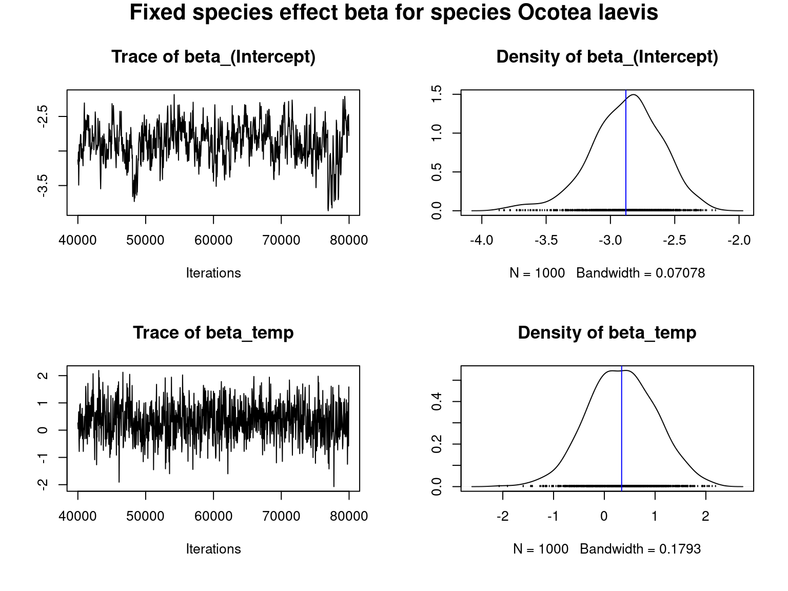
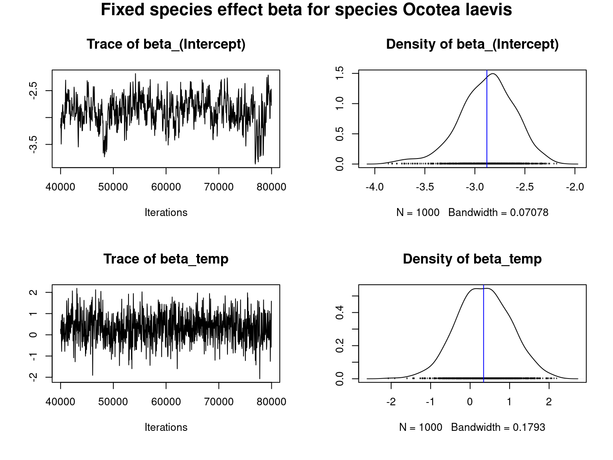
 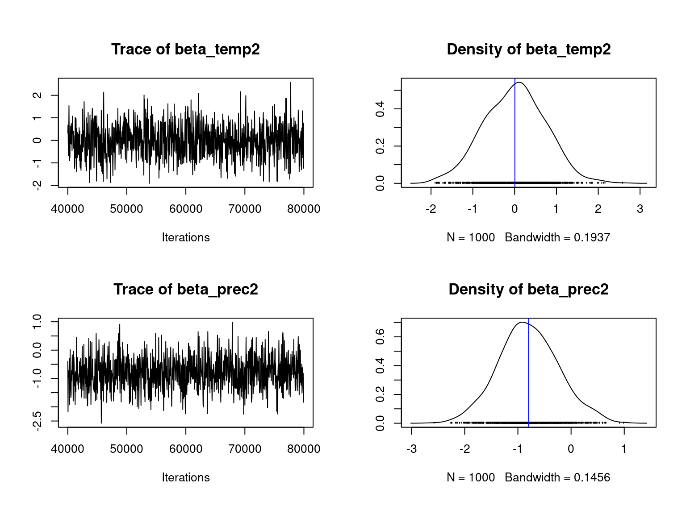
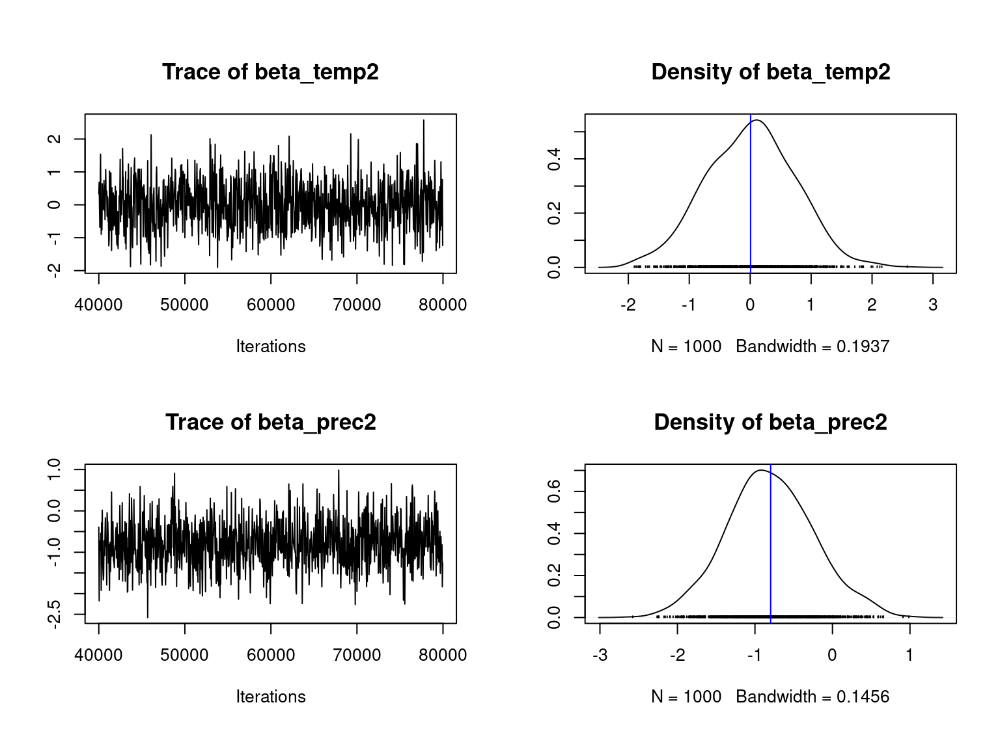

 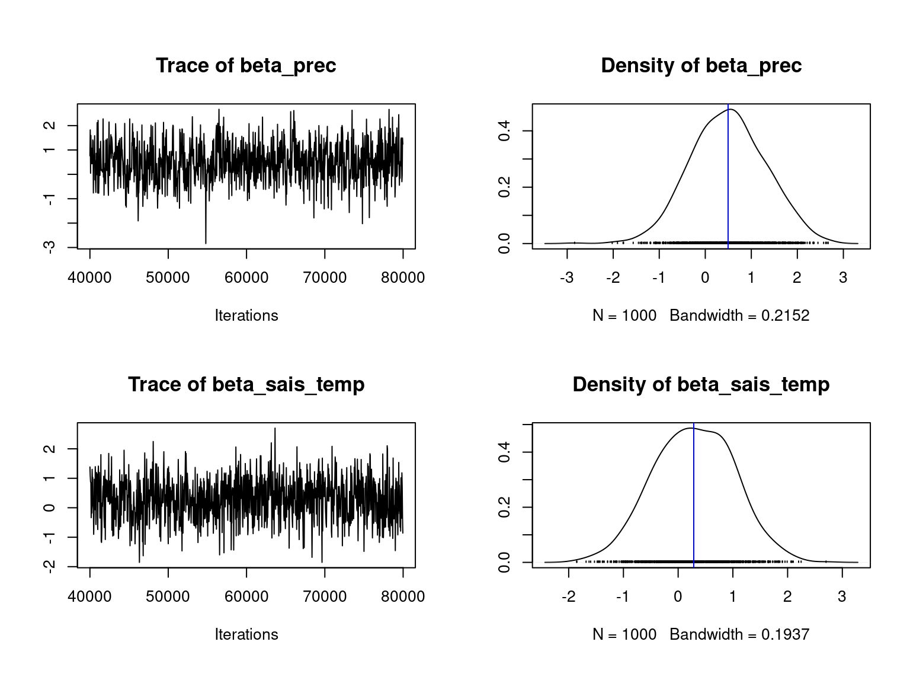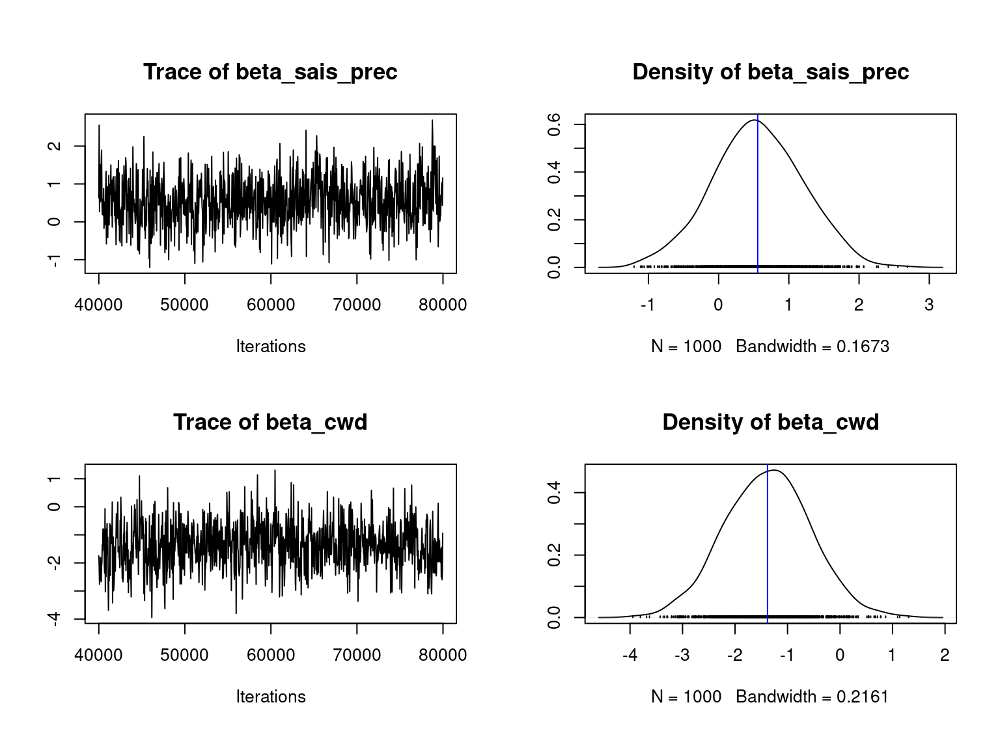
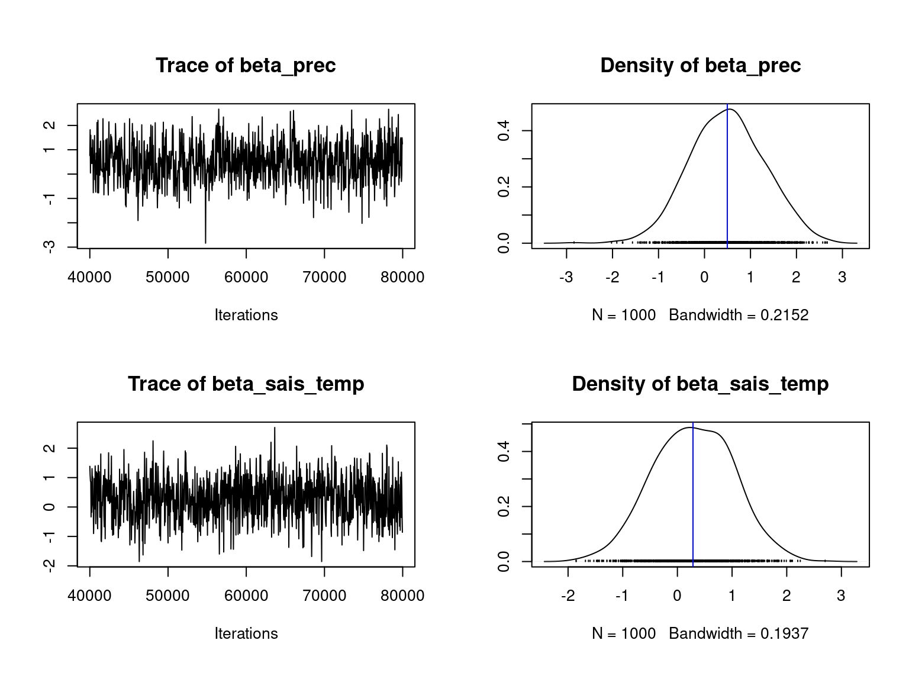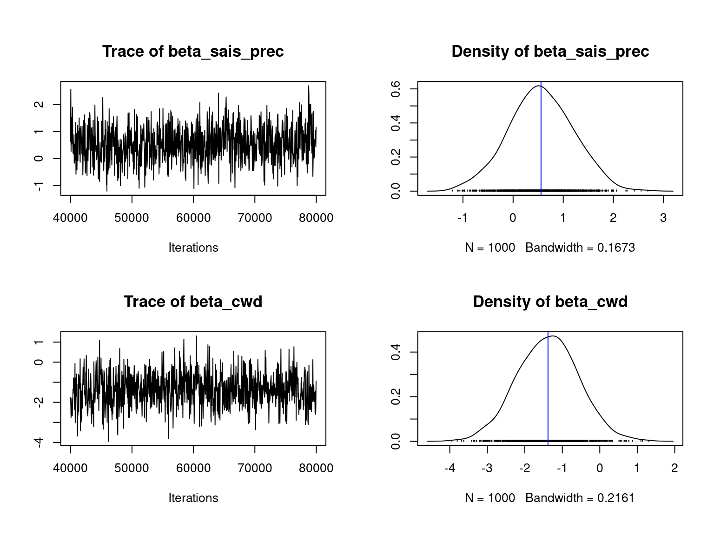

 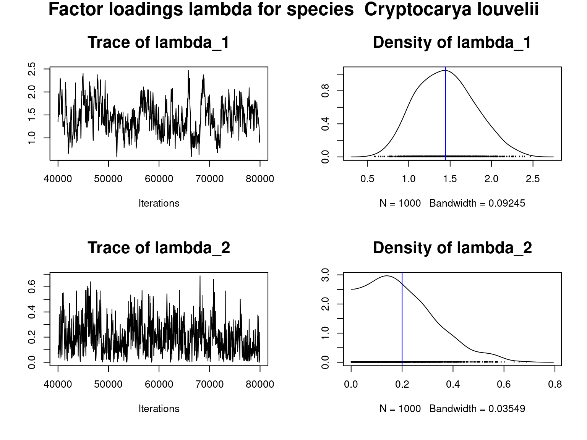
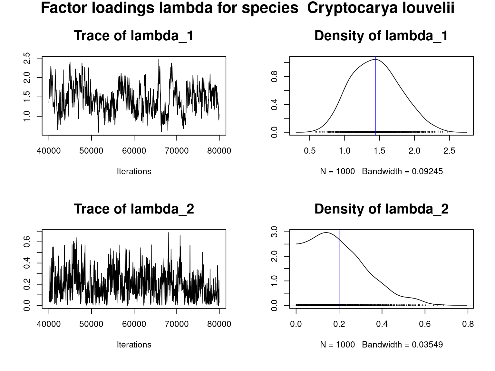 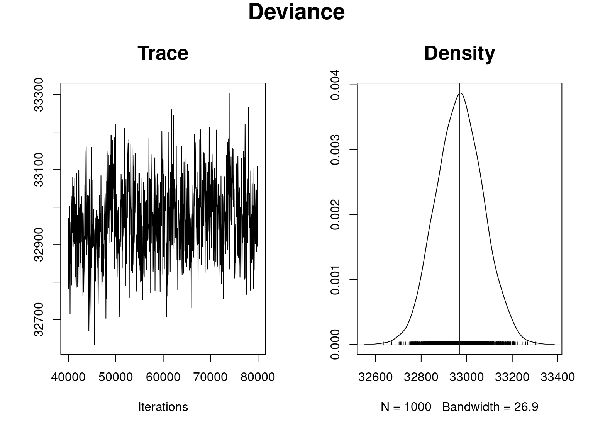
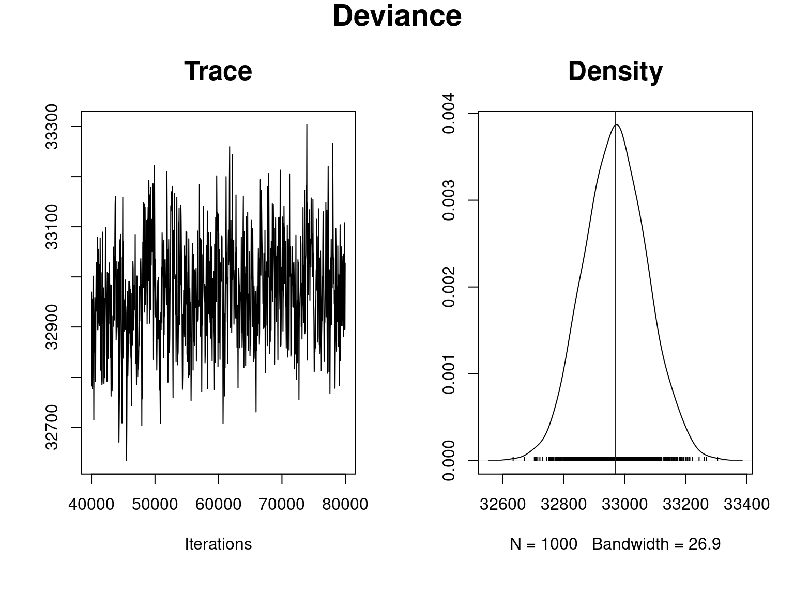
Overall, the traces and densities of the parameters indicate the convergence of the algorithm. Indeed, we observe on the traces that the values oscillate around averages without showing any upward or downward trend and we see that the densities are quite smooth and for most of them of gaussian form except for the \(\lambda_{11}\) species effect what is certainly due to the way of imposing positive values to this parameter.
4 Representation of results at inventory sites
4.1 Presence probabilities
theta_latent <- read.csv("~/Documents/projet_BioSceneMada/Report/data/theta_latent.csv")
load("~/Documents/projet_BioSceneMada/Report/data/scaled_data_clim.RData")
load("~/Documents/projet_BioSceneMada/Report/data/PA.RData")
# Madagascar borders
TA <- CRS("+init=epsg:32738 +units=m")
MADA <- readRDS("~/Documents/projet_BioSceneMada/Report/data/MADA.rds")
MADA <- sp::spTransform(MADA, TA)
# define groups for mapping
cuts <- c(0,0.1,0.2,0.3,0.4,0.5,0.7,0.8,0.9)
col <- c('red3','red','orange','yellow', 'yellow green', 'green3', 'forest green','dark green')
pols <- list("sp.polygons", MADA, fill = "lightgray")
# Observed presence absence
id_pres <- which(PA[,"Ocotea laevis"]==1)
id_abs <- which(PA[,"Ocotea laevis"]==0)
obs_pres <- data.frame(obs_pres=PA[id_pres,"Ocotea laevis"])
obs_abs <- data.frame(obs_abs=PA[id_abs,"Ocotea laevis"])
obs_pres <- sp::SpatialPointsDataFrame(xy[id_pres,], obs_pres)
obs_abs <- sp::SpatialPointsDataFrame(xy[id_abs,], obs_abs)
# Representation
par(mfrow=c(1,1))
sp::plot(MADA, main ="Présences d'Ocotea laevis observées",cex.main=1.4)
points(obs_pres,pch=16,cex=1.2)
points(obs_abs,pch=1,cex=1.2)
legend("right",legend=c("presence","absence") ,pch=c(16,1))
# Estimated probabilities of presence
theta_latent_sp <- SpatialPointsDataFrame(xy,theta_latent)
names(theta_latent_sp) <- make.names(colnames(PA))
# Representation
sp::spplot(theta_latent_sp, 'Ocotea.laevis', cuts=cuts, col.regions=col, sp.layout=pols, pch=20, cex=1.6, key.space
="right", main ="Probabilités de présence d'Ocotea laevis estimées",cex.main=5)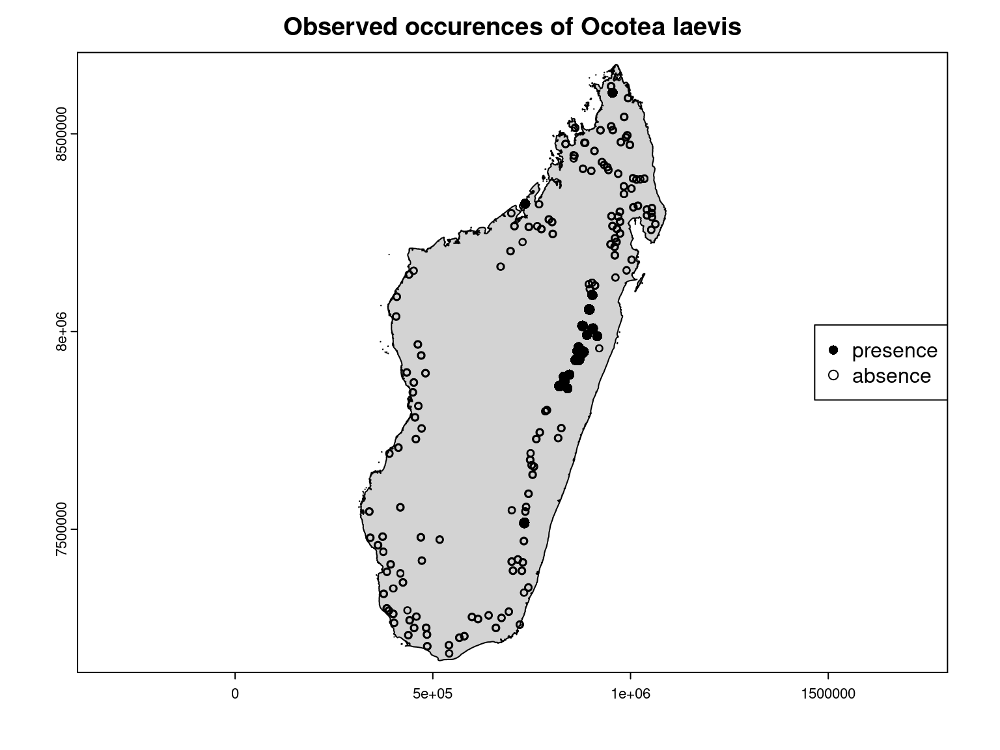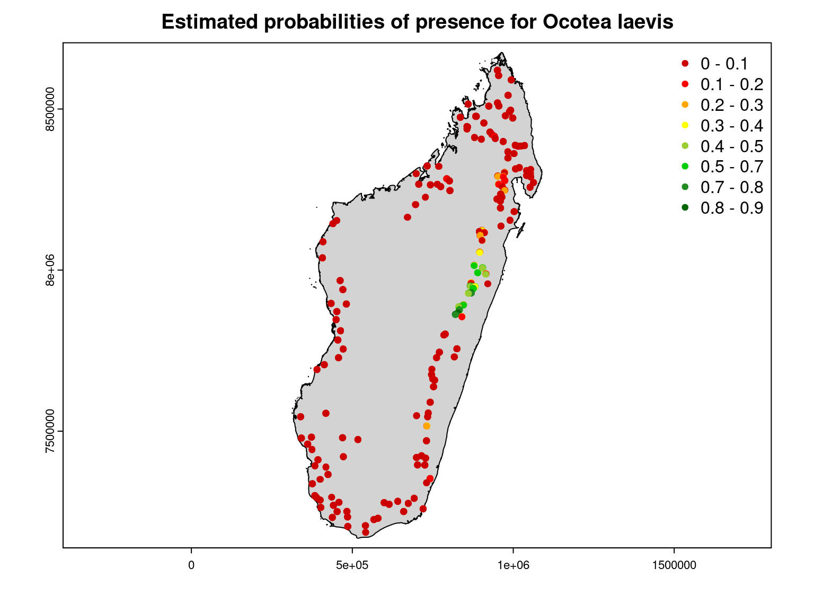
4.2 Species richness
Species richness also called diversity \(\alpha\) reflects the number of species coexisting in a given environment and is estimated by summing the estimated probabilities of occurrence. We spatially represent the species richness observed at each inventory site defined by \(R_i=\sum\limits_ {j=1}^{555} y_{ij}\) and the species richness estimated for each site by \(\widehat{R_i}=\sum\limits_ {j=1}^{483} \widehat{\theta_{ij}}\).
par(mfrow=c(1,1))
species_richness <- data.frame(species_richness= apply(theta_latent,1,sum))
species_richness_sp <- SpatialPointsDataFrame(xy, species_richness)
cuts <- c(0,2,4,8,12,16,20,24,ncol(theta_latent))
col <- c('red4','red','orange','yellow', 'yellow green', 'green3', 'forest green','dark green')
pols <- list("sp.polygons", MADA, fill = "lightgray")
spplot(species_richness_sp, 'species_richness', cuts=cuts, col.regions=col, sp.layout=pols, pch=20, cex=1.6, key.space="right", main ="Estimated species richness")
species_richness_obs <- data.frame(species_richness_obs=rowSums(PA))
species_richness_obs_sp <- SpatialPointsDataFrame(xy, species_richness_obs)
spplot(species_richness_obs_sp, 'species_richness_obs', cuts=cuts, col.regions=col, sp.layout=pols, pch=20, cex=1.6, key.space="right", main ="Observed species richness")
plot(species_richness_obs$species_richness_obs,species_richness$species_richness, main="Species richness", xlab="observed", ylab="estimated", cex.main=1.4, cex.lab=1.3)
abline(a=0,b=1,col='red')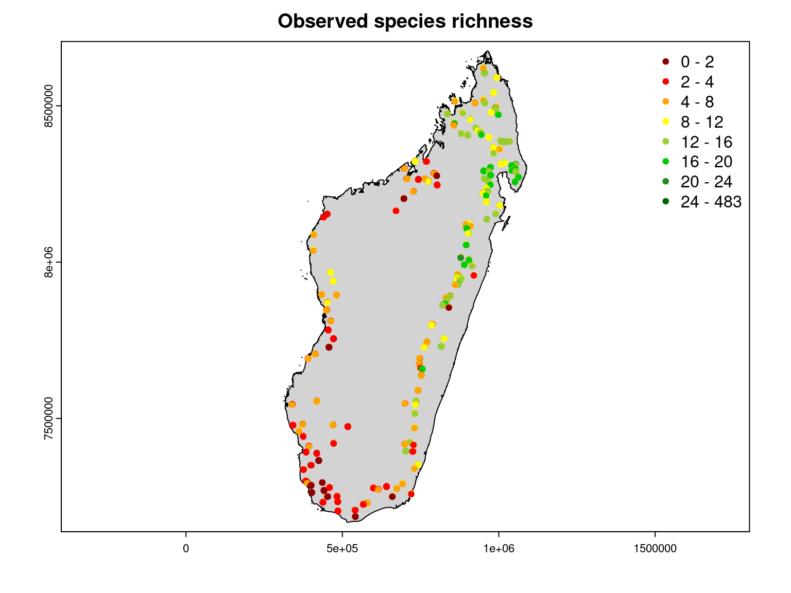

params_species <- read.csv(file = "~/Documents/projet_BioSceneMada/Report/data/params_species.csv")
# for each species we compute TSS for 100 threshold
thresholds <- seq(0,1,length.out=100)
TSS <- matrix(NA, nrow=length(thresholds), ncol=ncol(PA))
for (j in 1:ncol(PA)){
# occurrence probabilities are simply converted into presence-absence
# according to the threshold t
for(t in 1:length(thresholds)){
df <- data.frame(obs=PA[,j], pred=as.integer(theta_latent[,j]>=thresholds[t]))
# Confusion matrix
n00 = sum((df["pred"] == 0) & (df["obs"] == 0))
n10 = sum((df["pred"] == 1) & (df["obs"] == 0))
n01 = sum((df["pred"] == 0) & (df["obs"] == 1))
n11 = sum((df["pred"] == 1) & (df["obs"] == 1))
# Accuracy indices
Sensitivity = n11 / (n11 + n01)
Specificity = n00 / (n00 + n10)
# compute TSS
TSS[t,j] <- Sensitivity + Specificity -1
}
}
TSS <- cbind(TSS, thresholds)
colnames(TSS) <- c(make.names(params_species$species), "thresholds")
write.csv(TSS, file ="~/Documents/projet_BioSceneMada/Report/data/TSS.csv",row.names = F)
# Convert occurrence probabilities into presence-absence
# according to the threshold wich maximize TSS for each species
TSS <- read.csv("~/Documents/projet_BioSceneMada/Report/data/TSS.csv")
PA_pred <- matrix(0,nrow(PA),ncol(PA))
for(j in 1:ncol(PA)){
PA_pred[,j] <- as.integer(theta_latent[,j] >= thresholds[which.max(TSS[,j])])
}
write.csv(PA_pred,"~/Documents/projet_BioSceneMada/Report/data/PA_pred.csv")
# Compute absolute species richness
abs_species_richness <- data.frame(species_richness=rowSums(PA_pred))
abs_species_richness_sp <- SpatialPointsDataFrame(xy, abs_species_richness)
par(mfrow=c(1,1))
cuts <- c(0,2,4,8,12,16,20,24,ncol(theta_latent))
col <- c('red4','red','orange','yellow', 'yellow green', 'green3', 'forest green','dark green')
pols <- list("sp.polygons", MADA, fill = "lightgray")
spplot(abs_species_richness_sp, 'species_richness', cuts=cuts, col.regions=col, sp.layout=pols, pch=20, cex=1.6, key.space="right", main ="Estimated species richness")
spplot(species_richness_obs_sp, 'species_richness_obs', cuts=cuts, col.regions=col, sp.layout=pols, pch=20, cex=1.6, key.space="right", main ="Observed species richness")
plot(species_richness_obs$species_richness_obs, abs_species_richness$species_richness, main="Species richness", xlab="observed", ylab="estimated", cex.main=1.4, cex.lab=1.3)
abline(a=0,b=1,col='red')


4.3 Residual correlation
After fitting the JSDM with latent variables, the full species residual correlation matrix \(R=(R_{ij})^{i=1,\ldots, nspecies}_{j=1,\ldots, nspecies}\) can be derived from the covariance in the latent variables such as : \[\Sigma_{ij} = \begin{cases} \lambda_i .\lambda_j^T & \text{ if } i \neq j \\ \lambda_i .\lambda_j^T + 1 & \text{ if } i=j \end{cases}\], then we compute correlations from covariances : \[R_{i,j} = \frac{\Sigma_{ij}}{\sqrt{\Sigma _{ii}\Sigma _{jj}}}\].
load("~/Documents/projet_BioSceneMada/Report/data/mada_mod.RData")
n.species <- ncol(mod_all$model_spec$presence_data)
n.mcmc <- nrow(mod_all$mcmc.latent[[1]])
Tau.cor.arr <- matrix(NA,n.mcmc,n.species^2)
for(t in 1:n.mcmc) {
lv.coefs <- t(sapply(mod_all$mcmc.sp, "[", t, grep("lambda",colnames(mod_all$mcmc.sp$sp_1))))
Tau.mat <- lv.coefs %*% t(lv.coefs) + diag(n.species)
Tau.cor.mat <- cov2cor(Tau.mat)
Tau.cor.arr[t,] <- as.vector(Tau.cor.mat)
}
## Average over the MCMC samples
R <- matrix(apply(Tau.cor.arr,2,mean),n.species,byrow=F)
write.csv(R, file ="~/Documents/projet_BioSceneMada/Report/data/R.csv", row.names = F)
# Forest inventory
load("~/Documents/projet_BioSceneMada/Report/data/PA.RData")
# Species parameters
params_species <- read.csv(file = "~/Documents/projet_BioSceneMada/Report/data/params_species.csv")
# Residual correlation matrix R
R <- read.csv("~/Documents/projet_BioSceneMada/Report/data/R.csv")
colnames(R) <- rownames(R) <- make.names(params_species$species)
R <- as.matrix(R)
library(viridis)
plot_associations(R, circleBreak=TRUE, occ=PA, top=20,
main="Species-species association sorted after their frequency",
cols_association=viridis::viridis(10),
cols_occurrence=viridis::magma(10),
species_order="frequency")
# Average of MCMC samples of species effect beta except the intercept
effects = params_species[,grep("beta", colnames(params_species))[-1]]
np <- ncol(effects)
# Add absolute quadratic and linear effects of each environmental variable
effects <- abs(effects[,1:(np/2)]) + abs(effects[,(np/2 +1):np])
colnames(effects) <- gsub("beta_", "",colnames(effects))
plot_associations(R, env_effect=effects, top=20,
main="Species-species association sorted after their main environmental effect",
cols_association=viridis::viridis(10),
species_order="main env_effect")

5 Intrapolation of parameters between inventory sites
The presence of a spatial structure where observations close to each other are more similar than those far away (spatial auto-correlation) is a prerequisite for the application of geostatistics and from the previous spatial representations it seems to be satisfied.
Thus, it is possible to interpolate sites’ parameters for the whole island from those estimated for the inventory plots using the spatial interpolation method called regularized spline with tension (RST) from GRASS GIS software via rgrass7 R package.
This method is described in the article (Mitášová & Hofierka 1993).
5.1 Random site effect \(\alpha\)
## Initialize GRASS
setwd("~/Documents/jSDM/vignettes")
Sys.setenv(LD_LIBRARY_PATH=paste("/usr/lib/grass78/lib", Sys.getenv("LD_LIBRARY_PATH"),sep=":"))
library(rgrass7)
# use a georeferenced raster
system('grass -c ~/Documents/projet_BioSceneMada/Report/data/scaled_clim.tif grassdata/interpolation')
# connect to grass database
initGRASS(gisBase="/usr/lib/grass78",
gisDbase="grassdata",
location="interpolation", mapset="PERMANENT",
override=TRUE)
library(rgrass7)
# Import sites parameters
params_sites <- read.csv("~/Documents/projet_BioSceneMada/Report/data/params_sites.csv")
longlat <- SpatialPoints(params_sites[,c("long","lat")])
proj4string(longlat) <- CRS("+proj=longlat +ellps=clrk66 +units=m")
# latlong to UTM38S projection
xy = spTransform(longlat, CRS("+proj=utm +zone=38 +south +datum=WGS84 +units=m +no_defs +ellps=WGS84 +towgs84=0,0,0"))
# alpha
alpha_sp <- SpatialPointsDataFrame(xy, data.frame(alpha=params_sites$alphas))
use_sp()
rgrass7::writeVECT(alpha_sp, "alpha", v.in.ogr_flags="overwrite")
# Import Madagascar shapefile
clim <- stack("~/Documents/projet_BioSceneMada/Report/data/current.tif")
Madagascar <- as(clim[[1]], 'SpatialGridDataFrame')
rgrass7::writeRAST(Madagascar, "Madagascar", flags="overwrite")
# Resample with RST
# Note: use maskmap=Madagascar to save computation time
# for pontual data use function v.surf.rst
system("v.surf.rst --overwrite --verbose -t tension=3 input=alpha zcolumn=alpha \\
smooth=0.0 elevation=alpha_rst mask=Madagascar")
# Export
system("r.out.gdal --overwrite input=alpha_rst \\
output=Madagascar_files/alpha_rst.tif type=Float32 \\
createopt='compress=lzw,predictor=2'")
# Representation
test_in <- raster("Madagascar_files/alpha_rst.tif")
plot(test_in)
test_xy <- raster::extract(test_in, xy)
plot(test_xy, params_sites$alphas, xlab="alpha interpolated by RST", ylab="alpha estimated by JSDM",
main="Random site effect")
abline(a=0, b=1, col='red')5.2 Latent variables \(W\)
# W1
W1_sp <- SpatialPointsDataFrame(xy, data.frame(W1=params_sites$W1))
rgrass7::writeVECT(W1_sp, "W1", v.in.ogr_flags="overwrite")
# Resample with RST
# Note: use maskmap=Madagascar to save computation time
# for pontual data use function v.surf.rst
system("v.surf.rst --overwrite --verbose -t tension=3 input=W1 zcolumn=W1 \\
smooth=0.0 elevation=W1_rst mask=Madagascar")
# Export
system("r.out.gdal --overwrite input=W1_rst \\
output=Madagascar_files/W1_rst.tif type=Float32 \\
createopt='compress=lzw,predictor=2'")
# Representation
test_in <- raster("Madagascar_files/W1_rst.tif")
plot(test_in)
test_xy <- raster::extract(test_in, xy)
plot(test_xy, params_sites$W1,xlab="W1 nterpolated by RST", ylab="W1 estimated by JSDM",
main="First latent axe")
abline(a=0, b=1, col='red')
# W2
W2_sp <- SpatialPointsDataFrame(xy, data.frame(W2=params_sites$W2))
rgrass7::writeVECT(W2_sp, "W2", v.in.ogr_flags="overwrite")
# Resample with RST
# Note: use maskmap=Madagascar to save computation time
# for pontual data use function v.surf.rst
system("v.surf.rst --overwrite --verbose -t tension=3 input=W2 zcolumn=W2 \\
smooth=0.0 elevation=W2_rst mask=Madagascar")
# Export
system("r.out.gdal --overwrite input=W2_rst \\
output=Madagascar_files/W2_rst.tif type=Float32 \\
createopt='compress=lzw,predictor=2'")
# Representation
test_in <- raster("Madagascar_files/W2_rst.tif")
plot(test_in)
test_xy <- raster::extract(test_in, xy)
plot(test_xy, params_sites$W2, xlab="W2 nterpolated by RST", ylab="W2 estimated by JSDM",
main="Second latent axe")
abline(a=0, b=1, col='red')6 Species distribution at Madagascar scale
We calculate the probabilities of species presences between inventory sites using interpolated site’s parameters.
6.1 Current species distribution
params_species <- read.csv(file = "~/Documents/projet_BioSceneMada/Report/data/params_species.csv")
npart <- 10
first.species <- seq(1,nsp,by=floor(nsp/npart)+1)
theta <- stack("~/Documents/projet_BioSceneMada/Report/data/RST_theta_1.tif")
names(theta) <- make.names(params_species$species[first.species[1]:(first.species[1]+floor(nsp/npart))])
par(mfrow=c(1,2),oma=c(1, 0, 1.4,1))
plot(theta[[c(1,6)]],cex.main=0.7)
title(main="Interpolated current probabilities of presence",outer=T,cex.main=0.9)

7 Representation of current and future plants biodiversity in Madagascar
7.1 Predictive maps of species richness (diversity \(\alpha\))
7.1.1 Relative current species richness
theta <- stack("~/Documents/projet_BioSceneMada/Report/data/RST_theta_1.tif")
species_richness <- sum(theta)
npart <- 10
for(n in 2:npart){
theta <- stack(paste0("~/Documents/projet_BioSceneMada/Report/data/RST_theta_",n,".tif"))
species_richness <- species_richness + sum(theta)
}
writeRaster(species_richness,file=paste0("~/Documents/projet_BioSceneMada/Report/data/species_richness.tif"),
format="GTiff", options=c("COMPRESS=LZW", "PREDICTOR=2"), overwrite=TRUE)
7.1.3 Relative current and future species richness restricted to forest cover
library(glue)
# raster of Madagascar's forest cover in 2000
forest <- stack("~/Documents/projet_BioSceneMada/Report/data/for2000.tif")
# change resolution of species richness rasters from 1000x1000m to 30x30m
in_f <- "~/Documents/projet_BioSceneMada/Report/data/species_richness.tif"
out_f <- "~/Documents/projet_BioSceneMada/Report/data/species_richness_30m.tif"
cmd <- glue('gdalwarp -tr 30 30 -te {xmin(forest)} {ymin(forest)} {xmax(forest)} {ymax(forest)} -r near -co "COMPRESS=LZW" -co "PREDICTOR=2" -overwrite {in_f} {out_f}')
system(cmd)
in_f <- "~/Documents/projet_BioSceneMada/Report/data/species_richness_future.tif"
out_f <- "~/Documents/projet_BioSceneMada/Report/data/species_richness_future_30m.tif"
cmd <- glue('gdalwarp -tr 30 30 -te {xmin(forest)} {ymin(forest)} {xmax(forest)} {ymax(forest)} -r near -co "COMPRESS=LZW" -co "PREDICTOR=2" -overwrite {in_f} {out_f}')
system(cmd)
# remove species richness values where there was no forest in 2000s
species_richness <- stack("~/Documents/projet_BioSceneMada/Report/data/species_richness_30m.tif")
species_richness_deforest <- mask(species_richness,forest)
writeRaster(species_richness_deforest,file="~/Documents/projet_BioSceneMada/Report/data/species_richness_deforest.tif",
format="GTiff", options=c("COMPRESS=LZW", "PREDICTOR=2"), overwrite=TRUE)
species_richness_future <- stack("~/Documents/projet_BioSceneMada/Report/data/species_richness_future_30m.tif")
species_richness_future_deforest <- mask(species_richness_future,forest)
writeRaster(species_richness_future_deforest,"~/Documents/projet_BioSceneMada/Report/data/species_richness_future_deforest.tif",format="GTiff", options=c("COMPRESS=LZW", "PREDICTOR=2"), overwrite=TRUE)

7.1.4 Absolute current species richness
# Absolute species richness
# load occurence data
load("~/Documents/projet_BioSceneMada/Report/data/PA.RData")
# load species and sites parameters
params_species <- read.csv("~/Documents/projet_BioSceneMada/Report/data/params_species.csv")
params_sites <- read.csv("~/Documents/projet_BioSceneMada/Report/data/params_sites.csv")
## inventory sites coordinates
longlat <- SpatialPoints(params_sites[,c("long","lat")])
proj4string(longlat) <- CRS("+proj=longlat +ellps=clrk66 +units=m")
# latlong to UTM38S projection
xy = spTransform(longlat, CRS("+proj=utm +zone=38 +south +datum=WGS84 +units=m +no_defs +ellps=WGS84 +towgs84=0,0,0"))
# load RST interpolation of occurence probabilities
RST_theta <- stack("~/Documents/projet_BioSceneMada/Report/data/RST_theta_1.tif")
theta_pred <- extract(RST_theta,xy)
for(n in 2:npart){
RST_theta <- stack(paste0("~/Documents/projet_BioSceneMada/Report/data/RST_theta_", n, ".tif"))
theta_pred <- cbind(theta_pred, extract(RST_theta,xy))
}
# for each species we compute TSS for 100 threshold
thresholds <- seq(0,1,length.out=100)
TSS <- matrix(NA, nrow=length(thresholds), ncol=ncol(PA))
for (j in 1:ncol(PA)){
# occurrence probabilities are simply converted into presence-absence
# according to the threshold t
for(t in 1:length(thresholds)){
df <- data.frame(obs=PA[,j], pred=as.integer(theta_pred[,j]>=thresholds[t]))
# Confusion matrix
n00 = sum((df["pred"] == 0) & (df["obs"] == 0))
n10 = sum((df["pred"] == 1) & (df["obs"] == 0))
n01 = sum((df["pred"] == 0) & (df["obs"] == 1))
n11 = sum((df["pred"] == 1) & (df["obs"] == 1))
# Accuracy indices
Sensitivity = n11 / (n11 + n01)
Specificity = n00 / (n00 + n10)
# compute TSS
TSS[t,j] <- Sensitivity + Specificity -1
}
}
TSS <- cbind(TSS, thresholds)
colnames(TSS) <- c(make.names(params_species$species), "thresholds")
write.csv(TSS, file ="~/Documents/projet_BioSceneMada/Report/data/TSS.csv",row.names = F)
# Convert occurrence probabilities into presence-absence
# according to the threshold wich maximize TSS for each species
TSS <- read.csv("~/Documents/projet_BioSceneMada/Report/data/TSS.csv")
npart <- 10
sp <- 1
for(n in 1:npart){
theta <- stack(paste0("~/Documents/projet_BioSceneMada/Report/data/RST_theta_", n, ".tif"))
PA_fitted <- theta
for(j in 1:nlayers(theta)){
PA_fitted[[j]] <- (theta[[j]] >= thresholds[which.max(TSS[,sp])])
sp <- sp+1
}
writeRaster(PA_fitted,paste0("~/Documents/projet_BioSceneMada/Report/data/PA_",n, ".tif"),
datatype="INT1U", format="GTiff", options=c("COMPRESS=LZW", "PREDICTOR=2"), overwrite=TRUE)
}
# Compute absolute species richness
PA <- stack("~/Documents/projet_BioSceneMada/Report/data/PA_1.tif")
abs_species_richness <- sum(PA)
for(n in 2:npart){
PA <- stack(paste0("~/Documents/projet_BioSceneMada/Report/data/PA_", n, ".tif"))
abs_species_richness <- abs_species_richness + sum(PA)
}
writeRaster(abs_species_richness,"~/Documents/projet_BioSceneMada/Report/data/abs_species_richness.tif", datatype="INT1U", format="GTiff", options=c("COMPRESS=LZW", "PREDICTOR=2"), overwrite=TRUE)
library(glue)
# raster of Madagascar's forest cover in 2000
forest <- stack("~/Documents/projet_BioSceneMada/Report/data/for2000.tif")
# change resolution of species richness rasters from 1000x1000m to 30x30m
in_f <- "~/Documents/projet_BioSceneMada/Report/data/abs_species_richness.tif"
out_f <- "~/Documents/projet_BioSceneMada/Report/data/abs_species_richness_30m.tif"
cmd <- glue('gdalwarp -tr 30 30 -te {xmin(forest)} {ymin(forest)} {xmax(forest)} {ymax(forest)} -r near -co "COMPRESS=LZW" -co "PREDICTOR=2" -overwrite {in_f} {out_f}')
system(cmd)
in_f <- "~/Documents/projet_BioSceneMada/Report/data/abs_species_richness.tif"
out_f <- "~/Documents/projet_BioSceneMada/Report/data/abs_species_richness_30m.tif"
cmd <- glue('gdalwarp -tr 30 30 -te {xmin(forest)} {ymin(forest)} {xmax(forest)} {ymax(forest)} -r near -co "COMPRESS=LZW" -co "PREDICTOR=2" -overwrite {in_f} {out_f}')
system(cmd)7.2 Predictive maps of species turnover (diversity \(\beta\))
Diversity \(\beta\) is a measure of biodiversity that compares the diversity of species between ecosystems or along environmental gradients, using the number of taxa that are unique to each ecosystem.
In order to estimate this indicator, we proceed in the same way as in the Allnutt et al. (2008) article by performing a standard PCA on the interpolated probabilities of occurrence of species for each pixel of the displayed image. We use the coordinates obtained for the first three axes of the PCA that reflect the composition of the species community likely to occupy the corresponding pixel. These coordinates are scaled \([0.255]\) so that they can be represented by red colour levels for the first axis, green for the second and blue for the third. The combination of these three colour levels determines the colouring of each pixel in the displayed \(\beta\) diversity map. Therefore, a colour difference between two pixels indicates that the species present are not the same, while pixels of identical colour host communities of similar species.
7.2.1 Current species turn-over
# Sample 10000 cells of presence probabilities raster
npart <- 10
theta <- stack("~/Documents/projet_BioSceneMada/Report/data/RST_theta_1.tif")
samp_theta <- raster::sampleRandom(theta, size=10000, ext=extent(theta), na.rm=TRUE, cells=TRUE)
samp_cells <- samp_theta[,"cell"]
samp_theta <- samp_theta[,-1]
for(n in 2:npart){
theta <- stack(paste0("~/Documents/projet_BioSceneMada/Report/data/RST_theta_", n, ".tif"))
samp_theta <- cbind(samp_theta, theta[samp_cells])
}
params_species <- read.csv(file = "~/Documents/projet_BioSceneMada/Report/data/params_species.csv")
colnames(samp_theta) <- params_species$species
# Dataframe to compute PCA on pixels dissimilarity
theta_df <- data.frame(samp_theta)
library(ade4)
pca_theta <- dudi.pca(theta_df, center=TRUE, scale=TRUE, nf=3, scannf = FALSE)
save(pca_theta, samp_cells, file="~/Documents/projet_BioSceneMada/Report/data/PCA_theta.RData")
str(pca_theta)
# Perform projections of PCA results on all raster's rows
# Coordinates on the 3 axes retained in the PCA
coords <- theta[[c(1,2,3)]]
values(coords) <- 0
names(coords) <- colnames(pca_theta$li)
for(k in 1:nrow(theta)){
theta <- stack("~/Documents/projet_BioSceneMada/Report/data/RST_theta_1.tif")
theta_k <- getValues(theta, row=k)
for(n in 2:npart){
theta <- stack(paste0("~/Documents/projet_BioSceneMada/Report/data/RST_theta_", n, ".tif"))
theta_k <- cbind(theta_k, getValues(theta, row=k))
}
colnames(theta_k) <- params_species$species
theta_k <- data.frame(theta_k)
coords[k,] <- as.matrix(suprow(pca_theta,theta_k)$lisup)
print(paste0(k,"/",nrow(theta)))
}
writeRaster(coords,file="~/Documents/projet_BioSceneMada/Report/data/coords.tif",
format="GTiff", options=c("COMPRESS=LZW", "PREDICTOR=2"), overwrite=TRUE)
# Change the coordinate scale for [0.255].
## Min reduced to 0
Min <- minValue(coords)
Min
coords_RGB <- coords
for (l in 1:3) {
coords_RGB[[l]] <- coords[[l]] - Min[l]
}
Min2 <- minValue(coords_RGB)
Min2
## Max at 255
remove(coords)
Max <- maxValue(coords_RGB)
Max
for (l in 1:3) {
coords_RGB[[l]] <- (coords_RGB[[l]] / Max[l])*255
}
Max2 <- maxValue(coords_RGB)
Max2
# Coloration RGB
writeRaster(coords_RGB,file=paste0("~/Documents/projet_BioSceneMada/Report/data/species_turnover.tif"),
format="GTiff", options=c("COMPRESS=LZW", "PREDICTOR=2"), overwrite=TRUE)7.2.2 Future species turn-over
npart <- 10
# load results of PCA on present probabilities of presences
load(file="~/Documents/projet_BioSceneMada/Report/data/PCA_theta.RData")
params_species <- read.csv(file = "~/Documents/projet_BioSceneMada/Report/data/params_species.csv")
theta <- stack(paste0("~/Documents/projet_BioSceneMada/Report/data/RST_theta_future_", 1, ".tif"))
# Perform projections of PCA results on all raster's rows
# Coordinates on the 3 axes retained in the PCA
library(ade4)
coords <- theta[[c(1,2,3)]]
names(coords) <- make.names(colnames(pca_theta$li))
values(coords) <- 0
for(k in 1:nrow(theta)){
theta <- stack("~/Documents/projet_BioSceneMada/Report/data/RST_theta_future_1.tif")
theta_k <- getValues(theta, row=k)
for(n in 2:npart){
theta <- stack(paste0("~/Documents/projet_BioSceneMada/Report/data/RST_theta_future_", n, ".tif"))
theta_k <- cbind(theta_k, getValues(theta, row=k))
}
colnames(theta_k) <- params_species$species
theta_k <- data.frame(theta_k)
coords[k,] <- as.matrix(suprow(pca_theta,theta_k)$lisup)
}
# Change the coordinate scale for [0.255].
## Min reduced to 0
Min <- minValue(coords)
Min
coords_RGB <- coords
for (l in 1:3) {
coords_RGB[[l]] <- coords[[l]] - Min[l]
}
Min2 <- minValue(coords_RGB)
Min2
## Max at 255
remove(coords)
Max <- maxValue(coords_RGB)
Max
for (l in 1:3) {
coords_RGB[[l]] <- (coords_RGB[[l]] / Max[i])*255
}
Max2 <- maxValue(coords_RGB)
Max2
# Coloration RGB
writeRaster(coords_RGB,file=paste0("~/Documents/projet_BioSceneMada/Report/data/species_turnover_future.tif"),
format="GTiff", options=c("COMPRESS=LZW", "PREDICTOR=2"), overwrite=TRUE)7.2.3 Current and future species turn over restricted to forest cover
library(glue)
# raster of Madagascar's forest cover in 2000
forest <- stack("~/Documents/projet_BioSceneMada/Report/data/for2000.tif")
# current species turnover
# change resolution of species richness rasters from 1000x1000m to 30x30m
in_f <- "~/Documents/projet_BioSceneMada/Report/data/species_turnover.tif"
out_f <- "~/Documents/projet_BioSceneMada/Report/data/species_turnover_30m.tif"
cmd <- glue('gdalwarp -tr 30 30 -te {xmin(forest)} {ymin(forest)} {xmax(forest)} {ymax(forest)} -r near -co "COMPRESS=LZW" -co "PREDICTOR=2" -overwrite {in_f} {out_f}')
system(cmd)
# remove species richness values where there was no forest in 2000s
species_turnover <- stack("~/Documents/projet_BioSceneMada/Report/data/species_turnover_30m.tif")
species_turnover_deforest <- mask(species_turnover,forest)
writeRaster(species_turnover_deforest,file="~/Documents/projet_BioSceneMada/Report/data/species_turnover_deforest.tif",
format="GTiff", options=c("COMPRESS=LZW", "PREDICTOR=2"), overwrite=TRUE)
# future species turnover
# change resolution of species richness rasters from 1000x1000m to 30x30m
in_f <- "~/Documents/projet_BioSceneMada/Report/data/species_turnover_future.tif"
out_f <- "~/Documents/projet_BioSceneMada/Report/data/species_turnover_future_30m.tif"
cmd <- glue('gdalwarp -tr 30 30 -te {xmin(forest)} {ymin(forest)} {xmax(forest)} {ymax(forest)} -r near -co "COMPRESS=LZW" -co "PREDICTOR=2" -overwrite {in_f} {out_f}')
system(cmd)
# remove species richness values where there was no forest in 2000s
species_turnover_future <- stack("~/Documents/projet_BioSceneMada/Report/data/species_turnover_future_30m.tif")
species_turnover_future_deforest <- mask(species_turnover_future,forest)
writeRaster(species_turnover_future_deforest,"~/Documents/projet_BioSceneMada/Report/data/species_turnover_future_deforest.tif",format="GTiff", options=c("COMPRESS=LZW", "PREDICTOR=2"), overwrite=TRUE)
# Representation of species turn over
species_turnover_current <- stack("~/Documents/projet_BioSceneMada/Report/data/species_turnover.tif")
species_turnover_future <- stack("~/Documents/projet_BioSceneMada/Report/data/species_turnover_future.tif")
par(mfrow=c(1,2), mar=c(1,1,2,1))
plotRGB(species_turnover_current, margins=T, stretch="hist", main="Estimated current species turn over")
plotRGB(species_turnover_future, margins=T, stretch="hist", main="Estimated future species turn over")
# Representation of species turn over restricted to forest cover in 2000's
species_turnover_deforest <- stack("~/Documents/projet_BioSceneMada/Report/data/species_turnover_deforest.tif")
species_turnover_future_deforest <- stack("~/Documents/projet_BioSceneMada/Report/data/species_turnover_future_deforest.tif")
par(mfrow=c(1,2),mar=c(1,1,2,1))
plotRGB(species_turnover_deforest,margins=T, stretch="hist")
title(main="Current species turn over restricted to forest cover",cex.main=0.85)
plotRGB(species_turnover_future_deforest,margins=T, stretch="hist")
title(main="Future species turn over restricted to forest cover",cex.main=0.85)

References
Albert, J.H. & Siddhartha, C. (1993) Bayesian analysis of binary and polychotomous response data. Journal of the American Statistical Association, 88, 669–679.
Allnutt, T.F., Ferrier, S., Manion, G., Powell, G.V.N., Ricketts, T.H., Fisher, B.L., Harper, G.J., Irwin, M.E., Kremen, C., Labat, J.-N., Lees, D.C., Pearce, T.A. & Rakotondrainibe, F. (2008) A method for quantifying biodiversity loss and its application to a 50-year record of deforestation across Madagascar. Conservation Letters, 1, 173–181.
Mitášová, H. & Hofierka, J. (1993) Interpolation by regularized spline with tension: II. Application to terrain modeling and surface geometry analysis. Mathematical Geology, 25, 657–669.
Riahi, K., Grubler, A. & Nakicenovic, N. (2007) Scenarios of long-term socio-economic and environmental development under climate stabilization. Technological Forecasting and Social Change, 74, 887–935.
Vieilledent, G., Cornu, C., Cuní Sanchez, A., Leong Pock-Tsy, J.-M. & Danthu, P. (2013) Vulnerability of baobab species to climate change and effectiveness of the protected area network in Madagascar: Towards new conservation priorities. Biological Conservation, 166, 11–22.
Warton, D.I., Blanchet, F.G., O’Hara, R.B., Ovaskainen, O., Taskinen, S., Walker, S.C. & Hui, F.K.C. (2015) So many variables: Joint modeling in community ecology. Trends in Ecology & Evolution, 30, 766–779.